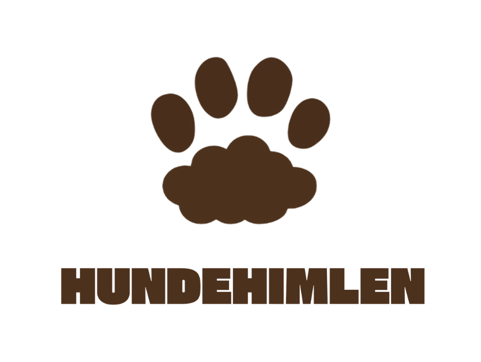
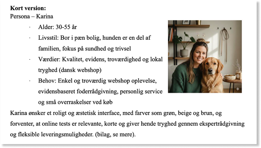
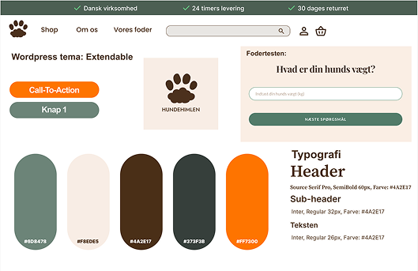
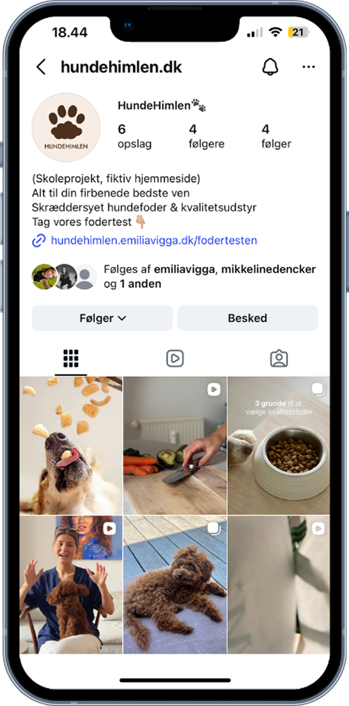

01
Projektet
Et e-commerce-projekt, hvor vi udviklede en moderne og brugervenlig webshop til hundeejere med fokus på kvalitetsprodukter, stærk visuel identitet og en enkel købsoplevelse.
Projektet omfattede bl.a. UX/UI-design, WordPress, WooCommerce og SEO.


02
Processen
Vi startede med at undersøge målgruppen og deres behov for at kunne skabe en webshop, der både føltes eksklusiv og var nem at navigere i. Herefter arbejdede vi med informationsarkitektur, brugeroplevelse og det visuelle udtryk.
Vi udviklede webshoppen i WordPress med WooCommerce og arbejdede blandt andet med produktkategorier, filtrering og produktvisninger. Vi havde samtidig fokus på SEO og optimerede blandt andet produktsider, interne links, metatitler og metabeskrivelser.
Som en del af projektet udviklede vi også Meta Ads målrettet forskellige målgrupper for at undersøge, hvordan webshoppen kunne skabe trafik og konverteringer.

03
Resultat
Resultatet blev en færdig og funktionel webshop, hvor design, brugeroplevelse og e-commerce blev tænkt sammen. Projektet gav mig praktisk erfaring med hele processen fra idé og målgruppe til design, udvikling, SEO og markedsføring.
Se hjemmesiden her
04
SoMe og Content
Som en del af projektet udviklede vi en fiktiv Instagram-profil for HundeHimlen som en del af virksomhedens markedsføringsstrategi. Vi producerede tre forskellige videoer, der hver især var målrettet en specifik målgruppe.